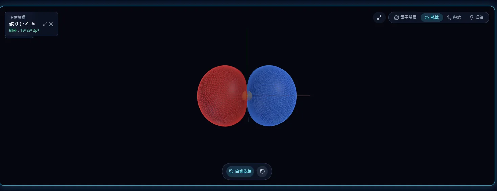
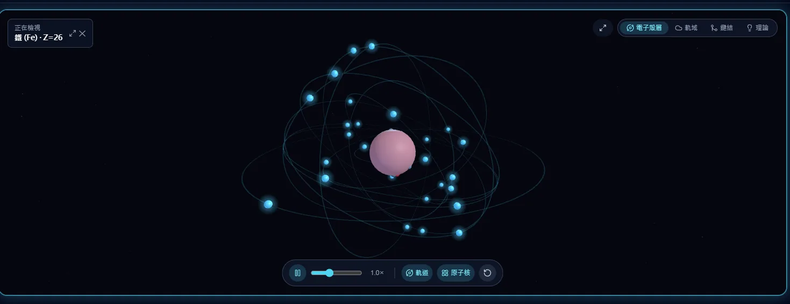

化學課本裡的電子軌域長什麼樣、兩個原子怎麼結合成分子、反應式怎麼配平，都是紙上的靜態圖，學生只能靠想像，然後背起來。
▶ 開啟 AtomSpin
週期表選元素，切「電子殼層 / 軌域 / 鍵結」三種視角，反應式配平在另一頁。
為什麼做這個
電子軌域是什麼形狀、原子核外面的電子怎麼排、一條化學方程式怎麼兩邊平衡——這些課本只給一張圖，學生記得住答案，但沒真的「看過」。做這個工具就是想讓這些概念變成看得到、可以自己轉一轉的東西，理解就不用全靠硬記。

三種看法，一個工具
同一個元素可以用三種方式看：電子殼層用波耳模型，一層一層把電子數出來；軌域畫電子雲的真實形狀；鍵結演示兩個原子怎麼共用電子、變成一個分子。另外一頁是反應式配平器，輸入一條方程式，它算出最小整數係數。

做成雙語
原本是越南文版。加了越南文 ↔ 繁體中文的即時切換，術語照台灣高中課綱（軌域、混成、價電子、八隅體⋯⋯），讓兩邊的學生都能用自己的母語學同一個內容。
我的角色
團隊專案。核心的化學視覺化由團隊成員打造；我負責把它從線上編輯器裡抽出來、拿掉平台相依讓它能獨立部署，以及做雙語 i18n。
想把一個抽象的概念做成一眼看得懂的畫面？寫信聊聊 →